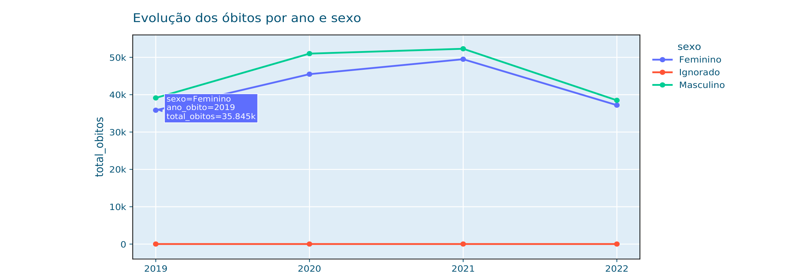
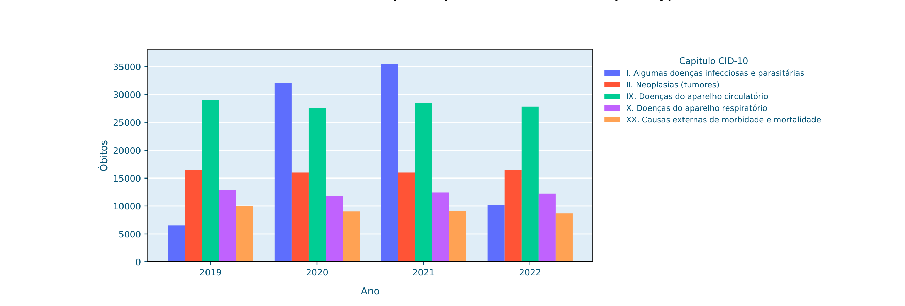

Módulo 2 | Aula 3
EDA e visualização da informação: dando vida aos dados
Plotly: gráficos interativos
Enquanto Matplotlib e Seaborn são utilizados principalmente para criar gráficos estáticos, o Plotly Express (px) permite gerar gráficos interativos, com recursos como zoom, tooltips e filtros de legenda. Esses recursos podem ser valiosos para explorar os dados de forma interativa.
Série temporal
Neste exemplo você criará um gráfico de linhas. O eixo X conterá os anos e o eixo o total de óbitos. Os dados serão divididos em 3 séries em função dos valores de sexo. Neste primeiro momento, crie o conjunto de dados que servirá de base para o gráfico.
import plotly.express as px
obitos_ano_sexo = (
sim_consolidado
.groupby(["ano_obito", "sexo"])
.size()
.reset_index(name="total_obitos")
)
obitos_ano_sexo.head(3)Resultado:
| ano_obito | sexo | total_obitos | |
|---|---|---|---|
| 0 | 2019 | Feminino | 35845 |
| 1 | 2019 | Ignorado | 19 |
| 2 | 2019 | Masculino | 39138 |
Agora, crie um gráfico de linhas com o Plotly.
# Ano como texto [...].astype(str) deixa o eixo X discreto (categórico):
# só 2019, 2020, 2021 e 2022
obitos_ano_sexo["ano_obito"] = obitos_ano_sexo["ano_obito"].astype(str)
fig = px.line(
data_frame = obitos_ano_sexo,
x="ano_obito",
y="total_obitos",
color="sexo",
title="Evolução dos óbitos por ano e sexo",
markers=True,
)
# Exibe o gráfico
fig.show()Gráfico de linhas com total de óbitos por sexo ao longo dos anos (Plotly).

Comparando capítulos da CID-10 ao longo dos anos com Plotly
Além de acompanhar a evolução dos óbitos por sexo, também podemos comparar diferentes grupos de causas ao longo dos anos. Neste exemplo, vamos utilizar os capítulos da CID-10 para verificar como o número de óbitos varia entre os anos de 2019-2022.
Assim como no exemplo anterior, primeiro precisamos criar uma tabela resumida que será utilizada para construir o gráfico. Para isso, agrupamos os registros por ano do óbito e capítulo da CID-10 e contamos o número de registros em cada combinação:
import plotly.express as px
obitos_ano_capitulo = (
sim_consolidado
.groupby(["ano_obito", "causabas_capitulo"])
.size()
.reset_index(name="total_obitos")
)
obitos_ano_capitulo.head()O método groupby() agrupa os registros de acordo com a combinação das colunas ano_obito e causabas_capitulo. Em seguida, size() conta quantos registros existem em cada grupo. Por fim, reset_index(name="total_obitos") transforma o resultado em um novo DataFrame e atribui o nome total_obitos à coluna com as contagens. Esse é o mesmo procedimento utilizado anteriormente para preparar os dados do gráfico de linhas por ano e sexo.
Como o ano será apresentado como uma categoria no eixo horizontal, podemos convertê-lo para texto:
obitos_ano_capitulo["ano_obito"] = (
obitos_ano_capitulo["ano_obito"].astype(str)
)Agora, você já pode criar o gráfico de barras:
fig = px.bar(
obitos_ano_capitulo,
x="ano_obito",
y="total_obitos",
color="causabas_capitulo",
barmode="group",
title="Óbitos por capítulo CID-10 e ano",
labels={
"ano_obito": "Ano",
"total_obitos": "Óbitos",
"causabas_capitulo": "Capítulo CID-10",
},
)
fig.show()Nesse gráfico, x="ano_obito" define os anos no eixo horizontal, enquanto y="total_obitos" representa a quantidade de óbitos. O parâmetro color="causabas_capitulo" utiliza uma cor diferente para cada capítulo da CID-10.
A opção barmode="group" organiza as barras lado a lado, permitindo comparar os diferentes capítulos dentro de cada ano. Dessa forma, você pode observar tanto as diferenças entre os grupos de causas quanto suas variações ao longo do período analisado.
Por fim, fig.show() exibe o gráfico interativo. Ao passar o cursor sobre uma barra, é possível consultar os valores correspondentes, aproveitando um dos principais recursos do Plotly: a exploração interativa dos dados.
Esse exemplo mostra como as operações de agrupamento aprendidas com o Pandas podem ser combinadas com o Plotly para construir visualizações mais detalhadas. Primeiro você organiza e resume os dados e, em seguida, utiliza o gráfico para facilitar a comparação entre os capítulos da CID-10 e os diferentes anos.
Número de óbitos por capítulo CID-10 e ano (Plotly).

O gráfico mostra que o número de óbitos varia entre os anos e entre os diferentes capítulos da CID-10. Algumas causas apresentam aumento ou redução ao longo do período, enquanto outras permanecem relativamente estáveis.
O que pode explicar essas mudanças? Elas refletem alterações reais na situação de saúde da população ou eventos específicos ocorridos no período?